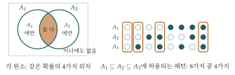

STEP III 2019, 문제 12
다음으로 넘어가기 전에 문제를 먼저 읽어 보자. 이 문제는 OCR에서 내려받을 수 있는 2019년 STEP 문제지 모음(zip 파일)의 STEP III 문제지에 있다: www.ocr.org.uk/Images/696590-2019-past-papers.zip
도입
\(\{1, 2, \ldots, 100\}\)의 부분집합(subset) 두 개를 완전히 무작위로 고른다고 하자. 두 집합이 공통 원소를 하나도 갖지 않을 가능성은 얼마나 될까? 직관은 “꽤 높다. 대부분의 집합 쌍은 서로 다르니까”라고 말할지도 모른다. 그러나 실제 확률(probability)은 \(\bigl(\frac34\bigr)^{100}\), 즉 약 \(3 \times 10^{-13}\)이다. 무작위 집합은 크기가 크고(전체의 약 절반), 그래서 거의 언제나 서로 겹친다.
문제는 짧지만, 그 안에 담긴 한 가지 아이디어는 강력하다. 집합을 통째로 생각하지 말고, 원소를 하나씩 생각하라는 것이다. 무작위 부분집합은 각 원소마다 한 번씩, 모두 \(n\)번의 독립적인 동전 던지기일 뿐이며, 무작위 부분집합에 관한 모든 질문은 이 동전 던지기에 관한 질문이 된다.
시작하기 전에
\(\{1, \ldots, n\}\)의 부분집합을 예/아니요 질문에 대한 \(n\)개의 답의 나열로 어떻게 나타낼 수 있을까?
각 원소 \(i\)에 대하여 “\(i\)가 집합에 속하는가?”라는 질문에 답한다. 부분집합이 정해지면 답이 정해지고, 답이 정해지면 부분집합이 정해진다. 원소마다 선택지가 \(2\)가지이므로 부분집합은 모두 \(2^n\)개이다. 부분집합을 균등하게 무작위로 고르는 것은 각 질문에 공정한 동전을 독립적으로 던져 답하는 것과 같다.
차근차근 풀기
단계 1 원소 하나
동전 던지기 설명에 따르면 \(\mathrm{P}(1 \in A_1) = \frac12\)이다. 실제로 \(2^n\)개의 부분집합 중 정확히 절반이 \(1\)을 포함한다. \(1\)을 포함하지 않는 각 부분집합을, 거기에 \(1\)을 추가하여 얻은 부분집합과 짝지으면 된다.
단계 2 서로소인 집합
\(A_1 \cap A_2 = \varnothing\)이려면 각 원소 \(i\)에 대해 무엇이 성립해야 하는가? 원소 하나에 대해 그 확률은 얼마인가? 왜 원소들에 걸쳐 곱할 수 있는가?
\(A_1\)과 \(A_2\)는 두 집합 모두에 속하는 원소가 없을 때 정확히 서로소(disjoint)이다. 원소 \(i\) 하나에 대해서는 같은 확률로 일어나는 네 가지 경우가 있다. 어느 집합에도 속하지 않는 경우, \(A_1\)에만 속하는 경우, \(A_2\)에만 속하는 경우, 둘 다에 속하는 경우이다(그림 9.12.1의 왼쪽). 마지막 경우만 금지되므로, \(i\)가 두 집합 모두에 속하지 않을 확률은 \(\frac34\)이다. 서로 다른 원소는 서로 다른 독립(independent)인 동전 던지기로 정해지므로 \[\mathrm{P}(A_1 \cap A_2 = \varnothing) = \Bigl(\frac34\Bigr)^n. \qed\] 집합이 세 개라면 원소 \(i\)가 세 집합 모두에 속할 확률은 \(\frac18\)이므로 \(\mathrm{P}(A_1 \cap A_2 \cap A_3 = \varnothing) = \bigl(\frac78\bigr)^n\)이다. 일반적으로 \[\mathrm{P}(A_1 \cap \cdots \cap A_m = \varnothing) = \Bigl(1 - \frac{1}{2^m}\Bigr)^n. \qed\]
단계 3 부분집합
\(A_1 \subseteq A_2\)이려면 원소에 대한 네 가지 경우 중 어느 것이 금지되는가?
\(A_1 \subseteq A_2\)는 어떤 원소가 \(A_1\)에는 속하지만 \(A_2\)에는 속하지 않을 때 정확히 성립하지 않는다. 이번에도 네 가지 패턴 중 하나가 금지되므로 \[\mathrm{P}(A_1 \subseteq A_2) = \Bigl(\frac34\Bigr)^n,\] 즉 서로소일 확률과 같다. 이것은 우연이 아니다. \(A_1 \subseteq A_2\)는 \(A_1\)이 \(A_2\)의 여집합(complement)과 서로소일 때 정확히 성립하며, 무작위 집합의 여집합은 또 다른 무작위 집합이다.
\(A_1 \subseteq A_2 \subseteq A_3\)이려면, 원소의 소속 패턴(각 집합에 속하는지 아닌지) \(8\)가지 중 어느 것이 허용되는가?
사슬(chain) \(A_1, A_2, A_3\)을 따라가면서, 원소가 일단 들어오면 계속 들어 있어야 한다. 따라서 허용되는 패턴은 “밖, 밖, 밖”, “밖, 밖, 안”, “밖, 안, 안”, “안, 안, 안”으로 \(8\)가지 중 \(4\)가지이다(그림 9.12.1의 오른쪽). 그러므로 \(\mathrm{P}(A_1 \subseteq A_2 \subseteq A_3) = \bigl(\frac48\bigr)^n = \bigl(\frac12\bigr)^n\)이다.
집합 \(m\)개로 이루어진 사슬에서는, 허용되는 패턴이 원소가 처음 들어가는 집합(\(A_1, \ldots, A_m\) 중 하나, 또는 끝내 들어가지 않음)에 의해 결정되므로 \(2^m\)개의 패턴 중 \(m + 1\)개가 허용된다. \[\mathrm{P}(A_1 \subseteq A_2 \subseteq \cdots \subseteq A_m) = \Bigl(\frac{m + 1}{2^m}\Bigr)^n. \qed\]

돌아보기
원소별로 분해하기. 집합 수준의 각 조건(서로소, 부분집합, 사슬)은 각 원소에 대한 개별 조건이었다.
원소 사이의 독립성. 원소들은 독립적인 동전 던지기로 정해지므로 확률을 곱한다.
패턴 세기. 각 답은 (허용되는 패턴 수 \(\div\) 전체 패턴 수)\(^n\)이었다.
숨은 수학
확률 없이 세기
선택의 가짓수를 곱하면 각 확률이 개수로 바뀐다. \(A_1 \subseteq A_2\)인 순서쌍 \((A_1, A_2)\)의 개수는 \(4^n \times \bigl(\frac34\bigr)^n = 3^n\)이다. 이 쌍들을 직접 셀 수도 있다. \(A_2\)의 크기 \(k\)를 정하고, \(A_2\) 자체를 \(\binom nk\)가지 방법으로 고른 다음, \(A_1\)을 \(A_2\)의 \(2^k\)개 부분집합 중 하나로 고르면 된다. 따라서 \[\sum_{k=0}^{n}\binom{n}{k}2^k = 3^n,\] 이것은 \((1 + 2)^n\)에 대한 이항정리(binomial theorem)이다. 같은 대상을 한 번은 원소별로, 한 번은 크기별로, 두 가지 방법으로 세어 항등식을 증명한 것이다. 이것이 이중 계수(double counting)라는 방법으로, 7.9 절에서 정다면체를 다룰 때 만난 적이 있다. 마찬가지로 사슬 \(A_1 \subseteq \cdots \subseteq A_m\)의 개수는 \((m + 1)^n\)이다.
부분집합의 격자
\(\{1, \ldots, n\}\)의 부분집합들은 포함 관계로 순서를 매기면 불 격자(Boolean lattice)라는 구조를 이룬다. 이것은 \(n\)차원 정육면체로 그려 볼 수 있다. 각 부분집합은 예/아니요 답의 나열로 이름 붙은 꼭짓점이고, 모서리를 따라 움직이는 것은 원소 하나를 추가하거나 제거하는 것이다. 사슬은 위로 올라가는 경로이다. 부분집합족에 조건이 주어졌을 때 그 족이 얼마나 클 수 있는지를 밝히는 깊은 결과들이 있다. 슈페르너 정리(Sperner’s theorem)(1928)는 어떤 집합도 다른 집합을 포함하지 않는 가장 큰 족이 \(\binom{n}{\lfloor n/2\rfloor}\)개의 집합으로 이루어짐을 말하고, 에르되시–코–라도 정리(Erdős–Ko–Rado theorem)(1961)는 어느 두 집합도 서로 겹치도록 \(k\)개 원소의 집합을 몇 개까지 고를 수 있는지를 말한다. 두 정리 모두 조합론(combinatorics) 입문 강의의 표준 내용이며, 부분집합을 동전 던지기로 보는 관점은 가장 매끄러운 증명 몇 가지를 제공한다.
조지 불(George Boole)의 The Laws of Thought(“사고의 법칙”, 1854)는 논리적 명제를 집합으로, “그리고”, “또는”, “아니다”를 각각 교집합, 합집합, 여집합으로 다루었다. 집합을 예/아니요 답의 문자열로 부호화하는 것은 바로 컴퓨터가 집합을 표현하는 방식이다. \(\{1, \ldots, 64\}\)의 부분집합은 하나의 \(64\)비트 수이고, 교집합은 “비트 AND” 명령이다. 원소 하나(비트 하나)씩 다루는 이 문제의 방법은 바로 그러한 연산을 분석하는 방법이다.
사고 기술
대상이 각 원소에 대한 독립적인 선택으로 만들어질 때, 모든 원소에 개별적으로 적용되는 조건의 확률은 곱과 같다.
이 방법은 \(2^n\)개의 부분집합에 관한 질문을 \(4\)개 또는 \(8\)개의 패턴에 관한 질문으로 바꾸었다. 대학에서는 조합론(집합과 중복집합(multiset)의 생성함수(generating function)), 확률론(독립인 좌표), 컴퓨터 과학(비트 단위 추론)에서 다시 등장한다.
더 도전하기
덮기. \(\mathrm{P}(A_1 \cup A_2 = S)\)와 \(\mathrm{P}(A_1 \cup A_2 \cup \cdots \cup A_m = S)\)를 구하여라.
같은 크기. \(\mathrm{P}(|A_1| = |A_2|) = \binom{2n}{n}\big/4^n\)임을 보여라. (힌트: \(|A_1| = |A_2|\)는 \(|A_1| + |S \setminus A_2| = n\)일 때 정확히 성립한다.) \(n\)이 클 때 이 값이 약 \(1/\sqrt{\pi n}\)임을 보여라.
셋으로 분할하기. \(S\)의 서로소인 부분집합의 순서쌍 \((A, B)\)의 개수가 \(3^n\)임을 보이고, 서로소인 부분집합의 순서 없는 쌍 \(\{A, B\}\)의 개수를 구하여라.
작은 \(n\)에 대한 슈페르너 정리. \(n = 3\)과 \(n = 4\)에 대하여, 어떤 집합도 다른 집합을 포함하지 않는 \(\{1, \ldots, n\}\)의 부분집합족 중 가장 큰 것을 구하여라.
더 읽을거리
Miklós Bóna, A Walk Through Combinatorics (World Scientific). 부분집합과 부분순서집합을 다루는 장들.
Béla Bollobás, Combinatorics: Set Systems, Hypergraphs, Families of Vectors and Combinatorial Probability (Cambridge University Press). 슈페르너 정리에서 출발하여 부분집합족을 다루는 짧고 우아한 책.
Peter Cameron, Combinatorics: Topics, Techniques, Algorithms (Cambridge University Press). 두 가지 방법으로 세기를 특히 강조하는 입문서.